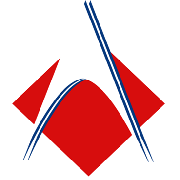
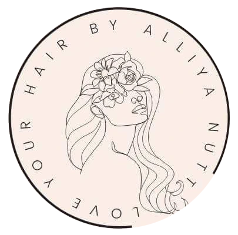
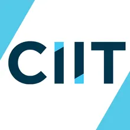

Freelance Editor
- I worked with short-form and long-for content for YouTubers.
- Proficient in multiple editing programs, so I am easily integrateable to different workflow systems.
2022-Present

AMA Computer Learning Center
IT - ProgrammingCumulative GPA: 3.70/4.00
This is my first introduction to programming, passing with Honors, and receiving an award for a school programming contest.
04/2022-09/2024
Java-Tech 2023 2nd Placer
I got 2nd place on a website speed-coding contest from a Senior Highschool event.
06/2023

Website | Love Your Hair
A website project when I was in Grade 12 for a business appropriately called "Love Your Hair", which was owned by a classmate.
2023

CIIT College of Arts and Technology
BSEMC - Game DevelopmentFirst Year
This is my first step into game development, and I hope I will be able to create the games I would want to play someday.
01/2026-Present
Website | Spiegel
My Finals Website for Information Management. A shopping website based on fashion aesthetics.
03/2026

Website | Alya's Space
My Finals Website for Introduction to Computing and Web Design. A personal website to know who I am, and it is also the very same site you're on right now!
03/2026